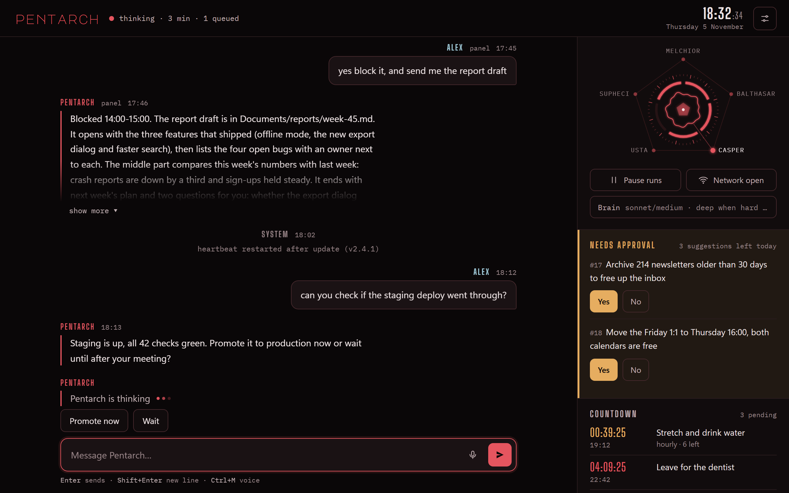

An assistant that
lives on your computer.
It talks to you over Telegram, runs on a free Google account or the Claude or ChatGPT plan you already pay for, keeps its memory in plain files you can read, works through its own routines all day, and asks before it does anything you can't take back.

Install
You need Python 3.10+, git, Node.js and a way to talk to it (Telegram, or Discord, Slack or e-mail), plus an AI account: a free Google login (Gemini CLI) is enough to start. Setup tells you if anything is missing and walks you through the rest in English or Turkish. For Telegram you need a bot token: message @BotFather, send /newbot, and paste the long code it gives you when setup asks. Allow 10 to 20 minutes.
On Windows: press Start, type PowerShell, open it, paste the line below and press Enter. Windows may ask "Allow changes?" while it installs git, Node.js or Python; click Yes.
On a Mac: press Cmd+Space, type Terminal, press Enter, paste the line below and press Enter. If something is missing (Apple's command line tools, Python, Node.js) it tells you what to do; do that and run the same line again. On Linux: open a terminal and paste the line.
irm https://raw.githubusercontent.com/RizgarOzan/pentarch/main/install.ps1 | iex
curl -fsSL https://raw.githubusercontent.com/RizgarOzan/pentarch/main/install.sh | sh
Prefer to read it first? Both scripts are short: install.ps1, install.sh. They clone the repo, make a virtualenv and run python setup.py.
A day with it
- 09:00A morning brief: what's due, what you're waiting on, mail that matters (if you connected Gmail or Yandex), one thing to do first.
- 12:10You send a voice note from the bus. It's transcribed on your machine and filed.
- 15:00A routine spots a job posting that fits your profile and asks Yes/No whether to add it to your tracker.
- 23:00An evening summary of what moved and what didn't.
- 03:00It tidies its own memory overnight.
None of that sent a message, pushed code or deleted a file for you. Outward actions wait for your yes.
What's in it
Telegram, panel, voice
Chat with text, photos and voice notes. A local panel on 127.0.0.1 shows health, spending, reminders and approvals.
Memory you can open
Profile, rules and notes are markdown files. Full-text search over your notes and past chats.
Routines and responsibilities
Briefs, reminders, tasks under a daily budget, and standing goals it owns until they're done.
A council of models
Several models answer, read each other and vote. Four advisors and a judge give a BUILD, FIX FIRST or KILL verdict on an idea.
Career tracker
Watches hackathons and junior jobs, scores postings from ten job sources. Each morning it builds scored CV, cover letter and outreach packages for the best ones in parallel; you approve every send.
Your agent, your choice
Claude Code, Gemini CLI, Codex or OpenCode. It uses the login you already have.
Safety
| Rule | What it means |
|---|---|
| Ask before outward actions | Sending, posting, pushing and deleting wait for a Yes button. |
| Keys stay local | Secrets live in ~/.pentarch/secrets. They never go into prompts, logs or the repo. |
| One owner | The bot answers the chat that paired with the code and ignores everyone else. |
| Local panel | Listens on 127.0.0.1 only, and every request needs a secret key that lives only on your machine. |
| Nothing hidden | The README lists every address it connects to. |
Who it's for, and what it won't do
It's a personal assistant for one person: a freelancer, a small shop owner, a student, someone job hunting. Before you install, know that:
- Only you talk to it. It isn't a customer chatbot; your customers can't message it.
- No WhatsApp. It talks over Telegram, and optionally Discord, Slack, Signal or email.
- It runs on your own computer. If the computer is off or asleep, it can't remind you or answer.
- It thinks with your AI account, so its limits are that account's limits.